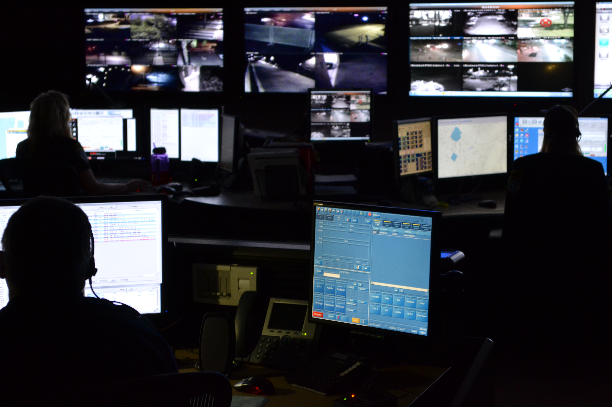

Part 1: The Growing Issue

How have Seattle police response times changed over time?
In a recent article from UW's newspaper The Daily, Wabula Kaugala, an employee at the local University Food and Beverage told writer Aspen Anderson that:
"Unless someone is putting a knife to your throat, [the Seattle Police Department is] not going to come.”
Many other local business employees that Anderson interviewed told similar stories entailing the Seattle Police Department (SPD) taking a long time to show up to calls, sometimes entirely failing to respond. This trend can be seen across all of Seattle:
Source(s): SPD 911 Call Data
Note: Response time was calculated as the difference between the time a police officer arrived at a caller's location and the time the call was queued in the SPD dispatch system. Certain types of calls - such as officer-initiated traffic stops or assigned duties - were deemed irrelevant to our investigation and were thus excluded from our visualizations. 2010 is the first full year in the SPD call dataset, which is why most of our visualizations examine changes in police response times from that year onward.
Before going further into our analysis, we want to establish that we're not covering this subject with the idea that everyone cares about police response times. Many Americans do not trust the police out of concerns that they will make a situation worse, especially after the murder of George Floyd in 2020.
That being said, there are people who want to rely on the police and measure this reliability through response times, like Kaugala and other Seattle business owners. This recent trend in SPD response times raises the question of how and why call response times have changed over the years. In this article, we will explore potential factors contributing to the increases in SPD response times, possibly challenging preconceived notions about the causes of these trends along the way. We also want to make clear that police response times are not analogous to safety, something we'll substantiate later in this investigation.
Now, the previous graph alone does not tell the full story. Whenever someone calls Seattle police, a police dispatcher assigns a priority to the call based on details provided by the caller. Some priorities are used specifically for officer-initiated events (such as traffic stops) or assigned duties (such as security at sports games); below is a breakdown of the call priorities that would be relevant to Seattle citizens when making 911 calls (and the only ones that we focus on throughout this article). Click on each card to see which categories were most commonly assigned to each priority:
WHAT ARE POLICE CALL PRIORITIES?
Click on the following cards to find out.
Priority 1
Required Response:
Immediate
Incidents which pose obvious danger to a citizen's or officer's life.
Predominant Priority 1 Call Categories
- Assault
- Unknown
- Disturbance (Domestic Violence)
- Suicide
- Fight (No Weapons)
Priority 2
Required Response:
Urgent
Incidents which may escalate into more dangerous situations without police intervention.
Predominant Priority 2 Call Categories
- Disturbance (misc.)
- Suspicious Person, Vehicle, or Incident
- Trespass
- Shoplife
- Hazard
Priority 3
Required Response:
Prompt
Investigations or small incidents that don't require a speedy response.
Predominant Priority 3 Call Categories
- Suspicious Person, Vehicle Or Incident
- Disturbance (misc.)
- Burglary
- Theft (Not Including Shoplifting)
- Automobile Theft
Priority 4
Required Response:
As Available
Incidents which constitute mischief or nuisance type complaints.
Predominant Priority 4 Call Categories
- Noise
- Property - Damage, etc.
- Parking Violation
- Fireworks
- Abandoned Vehicle
Note: “Predominant call categories” were determined by taking the initial call types from the SPD call dataset, grouping them into more general categories (e.g. “Assault - Domestic Violence”, “Assault - In Progress/Just Occurred - Domestic Violence”, etc. were grouped into the more general “Assault” category), and finding which categories were assigned to each priority the most from 2010-2022.
Through our research, we believe the “Unknown” call type represents calls where the caller doesn't say anything. This could be due to a threat of violence, etc. 99.91% of “Unknown” calls in Seattle from 2010 to 2022 were Priority 1 calls.
The visualization below represents the same data as our first graph, but groups calls by year and call priority. Scroll all the way to the right and click on entries in the legend if you want to look at different priorities individually.
Average SPD Response Time Over Time Per Call Priority
Year
Source(s): SPD 911 Call Data
It's clear that the increase in response times is not equally distributed between call priorities. Notably, Priority 2, 3, and 4 calls have suffered from the most significant increases.
Another aspect to this story relates to how the trend in police response time varies between the different areas of Seattle. The SPD does not break down its calls by neighborhood, but rather by “beats”, which are defined subsections of the areas that make up the five different SPD precincts. These are not directly analogous to Seattle neighborhoods, but based on their location, they can be used as proxies for neighborhoods.
Below is a map of average response times over time per priority per beat. You can select which year and priority to view, and you can hover over the different beats to see their names and which neighborhood they can be associated with (labeled as “Most Prominent Neighborhood”). Note that the scale of the legend changes when you switch between years and priorities.
Source(s): SPD 911 Call Data, SPD Tweets by Beat
Once again, not all beats are equally affected by this trend. Some beats have consistently experienced the worst response times throughout this entire time period from 2010-2022, some only join the set of beats with the worst response times in a certain year range, and so on. We'll break these differences down later in the article.
Our overall inquiry can be broken down into three sub-questions:
- What general/citywide influences may affect the increase in SPD response times?
- What area/neighborhood-specific influences may affect the increase in SPD response times?
- What do these visualizations leave out of the story?
With that, let's start with the citywide analysis.
Part 2: Citywide Influences
The below graph allows you to select different citywide influences to compare with average SPD police response times. Response times are represented by the blue line while the selected citywide factor to compare is represented by the orange line.
Source(s): SPD 911 Call Data, Seattle Open Budget, SPD Crime Data: 2008-Present, Washington Association of Sheriffs and Police Chiefs: 1980-2022 Full-Time Law Enforcement Employees, Seattle Department of Transportation Traffic Reports, SPD Tweets by Beat
Police budget and the number of Seattle police officers are the only influences that seem to have a noticeable correlation with average SPD response time - that correlation being negative. However, it's important to note that our budget data doesn't cover many years, and the number of SPD officers really only negatively correlates with response times in 2021 and 2022.
Part 3: Beat-Specific Influences
Before looking at beats (subsections of precincts) individually, we should account for their varying populations and sizes. Below is a graph comparing the population density (measured in thousands of people per square mile) of each beat with their average SPD response times over time. Change years and hover over data points to view information about specific beats.
Source(s): SPD 911 Call Data, Census Tract Top 50 American Community Survey Data, SPD Tweets by Beat
It appears that population density has no effect on average police response time, since beats with low population density have different levels of average response time no matter the year
Earlier in the investigation, we pointed out how some beats show distinctly different trends in average response time over time. The below graph attempts to quantify these differences by comparing how much each beat's average response time compares to their 2010 average response time. Four-year intervals are used to show overall trends. Once again, you can change years and hover over beats to see more specific information about them.
Source(s): SPD 911 Call Data, SPD Tweets by Beat
Examining the beats that had the highest and lowest differences from their 2010 average response times, we found that:
- B1, B2 and B3 (Ballard South, Fremont, and Wallingford) remained among the beats with the highest differences from their 2010 average response times.
- U1 and D3 (Roosevelt/Ravenna and SLU/Cascade) only rose to have some of the highest differences from their 2010 average response times in 2022.
- M3 (Downtown Commercial Area) remained among the beats with the lowest differences from their 2010 average response times.
- W3 and M1 (Fauntleroy SW and Downtown Commercial Area) only sunk to have some of the lowest differences from their 2010 average response times in 2022.
- E2 (Capitol Hill) was among the beats with the lowest differences from their 2010 average response times in 2014 and 2018, but by 2022 was closer to the middle.
Recently, police across the U.S. have increasingly been called out for excessive use of force and unequal treatment of people based on race. A mid-2021 report from the Center for Policing Equity found this unequal treatment in multiple different facets of the SPD. For example, “black people were seven times more likely to be subjected to force by a police officer than a white person.” We wanted to see if bias based on race and/or socioeconomic status had any effect on police response times, along with crime rate, which we thought might also be an important factor to consider.
The below heatmap compares demographic data (and crime rate) for each of the beats of interest listed above, compared with their average SPD response times over time. Change years and hover over beats to see more specific information about them.
Source(s): SPD 911 Call Data, Census Tract Top 50 American Community Survey Data, SPD Crime Data: 2008-Present
There seems to be no real relationship between any of the demographic data and average response times. But response time is just one measurement of police performance; we're not claiming that call responses are completely free of bias nor independent of crime rate entirely.
One final beat-specific attribute we can look at is the predominant crime categories of each beat in different years, shown below:
| Beat | Predominant Crime Types in 2010 (with Counts) | Predominant Crime Types in 2015 (with Counts) | Predominant Crime Types in 2020 (with Counts) |
|---|
Source(s): SPD 911 Call Data, SPD Crime Data: 2008-Present, SPD Tweets by Beat
The clearest pattern we find is that most of these beats have disturbances, reports of suspicious people, noise, and other low priority calls as their predominant call types. However, one beat sticks out, that being M3, which has “Unknown” as one of its predominant call types. As mentioned earlier, “Unknown” calls are almost never below Priority 1, and M3 is among the beats who deviated the least from its 2010 average response time. This could mean that a beat's average response time is influenced simply by the severity of the crimes prominently committed in that beat. The influence of this factor is questionable, since most calls in all beats are low priority but widely vary in their differences from their 2010 average response times. This finding importantly challenges the previously mentioned idea that police response times can be used as a measure of safety, as M3 seems to have lower response times in part because it had more calls that require “immediate” response, i.e. more severe and dangerous events.
Part 4: What Did We Miss?
There are three questions that arose from our above analysis that weren't answered by our visualizations. Below, we've tried to answer each of them and provide links for those interested in a deeper exploration:
-
Unfortunately, we weren't able to find any answers to this question. This was due in part to a large amount of articles on police response times being released in the past couple years, drowning out any sources from 2015 or 2018. However, the spike in 2021 may be due to the (at the time) recent decrease in SPD employment:
Police response times rise in Seattle - Kiro 7 News
-
There were 223 days in 2021 when the SPD issued an alert to not respond to lower priority calls for a period of the day due to high call volume:
Some calls go unanswered as Seattle Police change priority protocol - MyNorthwest -
“SPD typically dispatches officers to lower priority calls, but now they are rarely sent to these calls for services because of the staffing crisis”:
New recruiting plan unveiled as Seattle Police Department reports 30-year low in officers - King 5 News
-
Police budget and SPD employment aren't mutually exclusive. Some officers who've left in recent years cite budget uncertainty as a reason for leaving the force, or battles with the City Council over said budget:
Seattle police warn of 'staffing crisis' after 66 more officers leave - King 5 News 'I refuse to work for this socialist City Council' Resigning SPD cops cite low morale, safety and city leaders as reasons for leaving - Kiro 7 News -
Specialty units such as the sexual assault unit have been somewhat disbanded due to employee shortages:
How Seattle police are changing and prioritizing the way they handle your 911 calls - Kiro 7 News -
SPD's troubles with recruiting is its own can of worms:
New recruiting plan unveiled as Seattle Police Department reports 30-year low in officers - King 5 News
Conclusion

Police dispatchers at work.
We hope our investigation helps you understand the issue of SPD's increasing response times, its potential causes, and most importantly, the multifaceted nature of this issue. No one visualization or linked article should be seen as a definitive answer for why this trend is occurring. Each is its own component that helps provide a different perspective or rule out an idea, and even then, we don't claim that any of our findings are certain. Thank you for reading!
Attributions
Datasets
- SPD 911 Call Data
- Seattle Open Budget
- SPD Crime Data: 2008-Present
- Census Tract Top 50 American Community Survey Data
- Seattle Department of Transportation Traffic Reports
- Washington Association of Sheriffs and Police Chiefs: 1980-2022 Full-Time Law Enforcement Employees